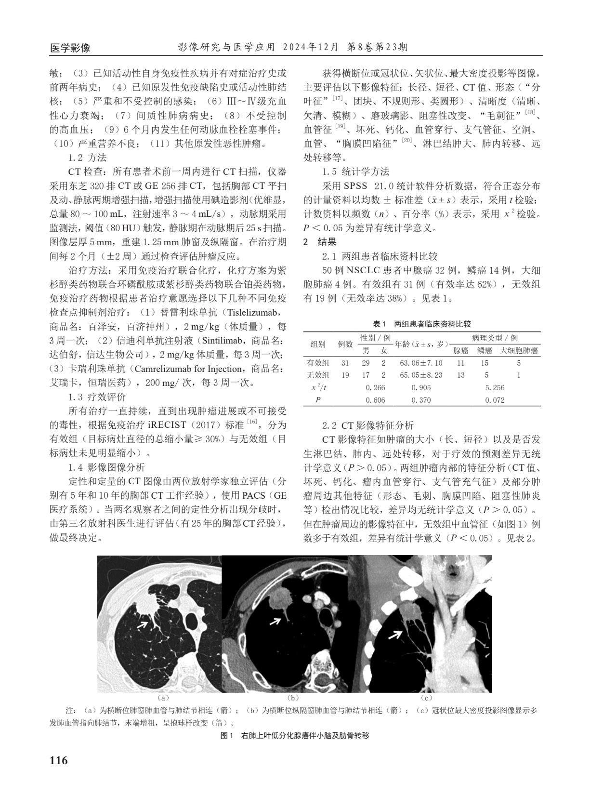

修复依据为原始字形连续性、完整数值相对已恢复父列组居中、子列边界没有实际竖分隔线。只恢复单元格跨度和原片段归属，不改数字、原始空白或数学符号，不作医学批准。
上一版父表头已恢复，但虚拟子列边界仍错误拆开四个完整数值；115字符守恒和格位覆盖不足以证明单元格归属。以下保留错误拆格的两行，供核对改动。
| χ 2 /t | 0. | 266 | 0.905 | 5.2 | 56 | ||
| P | 0. | 606 | 0.370 | 0.0 | 72 |
| 性别 / 例 | 病理类型 / 例 | ||||||
| 组别 | 例数 | 年龄（x - ± s，岁） | |||||
| 男 | 女 | 腺癌 | 鳞癌 | 大细胞肺癌 | |||
| 有效组 | 31 | 29 | 2 | 63.06±7.10 | 11 | 15 | 5 |
| 无效组 | 19 | 17 | 2 | 65.05±8.23 | 13 | 5 | 1 |
| χ 2 /t | 0.266 | 0.905 | 5.256 | ||||
| P | 0.606 | 0.370 | 0.072 | ||||
| 原片段 | 原始行/列（0起始） | colspan | 父表头 |
|---|---|---|---|
| 0.266 | 5 / [2, 4) | 2 | 性别 / 例 |
| 5.256 | 5 / [5, 8) | 3 | 病理类型 / 例 |
| 0.606 | 6 / [2, 4) | 2 | 性别 / 例 |
| 0.072 | 6 / [5, 8) | 3 | 病理类型 / 例 |
有效组的29/2与11/15/5、无效组的17/2与13/5/1保持独立子列；年龄原字符与0.905/0.370也保持原格。L05 Table3的12.78(± 4.71)原片段与原列未变。
定点回归14/14：真实竖线、偏离父组居中、字形间距断开、缺少竖线几何均拒绝认证/合并；相邻独立计数不合并；局部合成raw内空白原样保留。未改真实PDF或用户审核包。
本页已与最终L01默认adapter CPU实跑源网格一致，方法printed-rule-raw-glyph-grid-4，派生版本s3v3-030caa8389b4ce0d4cf349ec77c98733；当前真实IR与计划绑定以同目录report.json为准。排印基线7×8、两层逻辑表头，所有完整跨列值仅关联父表头。
